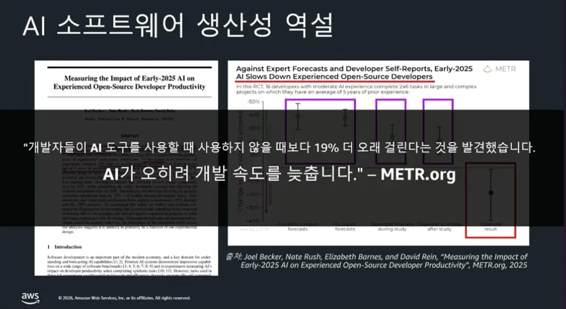
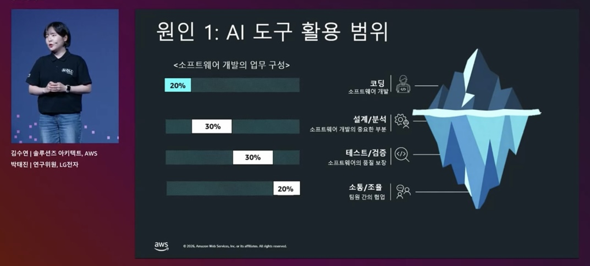
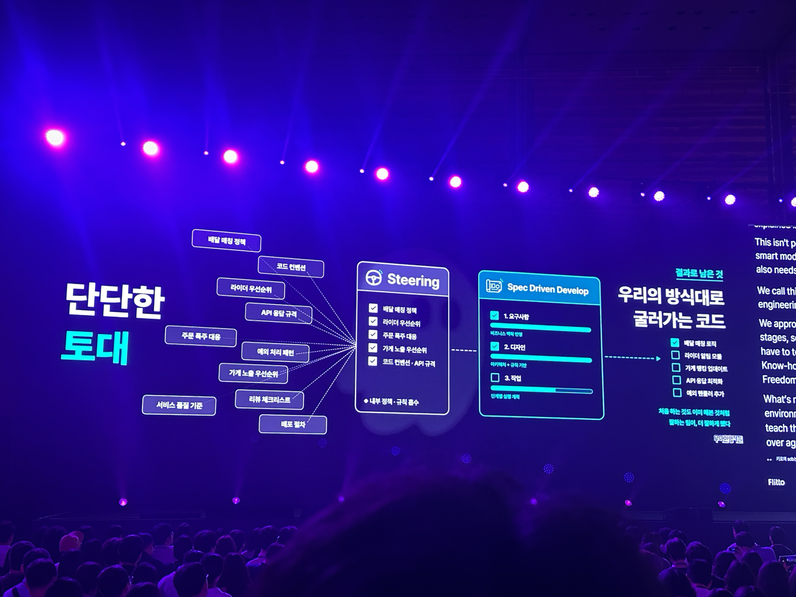
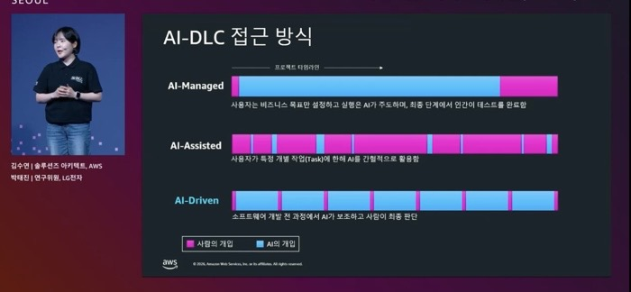
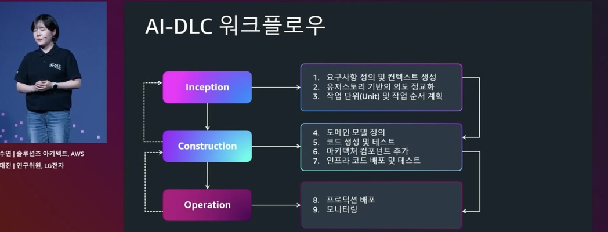
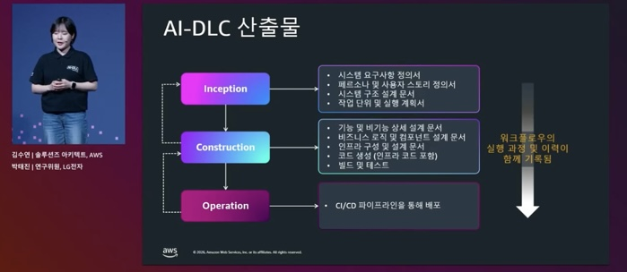
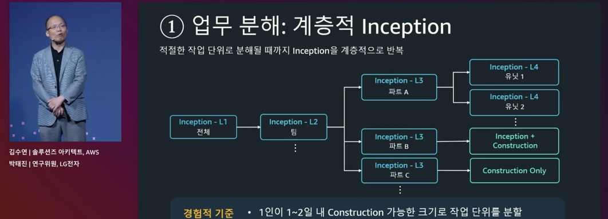
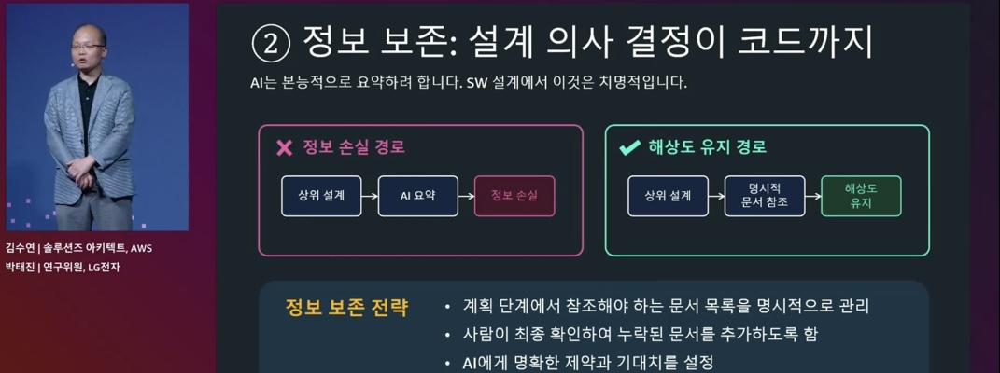
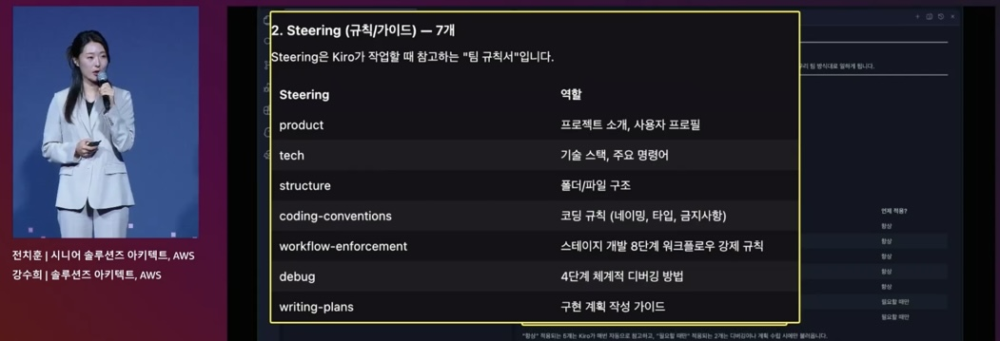

개발자들이 AI 도구를 사용할 때,
사용하지 않을 때보다 19% 더 오래 걸린다.

출처: METR.org, “Measuring the Impact of Early-2025 AI on Experienced Open-Source Developer Productivity”, 2025
"교환완료 / 반품완료 이후에는 주문상태를 변경할 수 없다"
AI를 그냥 채팅창처럼 쓰는 사람 vs. 탐색·수정·테스트·문서화를 연결해 쓰는 사람 — 생산성은 완전히 다르다.
"이 기능 추가해줘"
작은 프로젝트에서는 AI가 빠릅니다. 하지만 MSA + 레거시 + 도메인 정책 + 여러 API가 얽힌 환경은 다릅니다.
예를 들어 주문 생성 하나만 해도 —

코딩은 전체 업무의 20%일 뿐 — 설계·검증·소통이 빙산의 대부분을 차지한다.

사용자는 비즈니스 목표만 설정, 실행은 AI가 주도 — 최종 단계에서만 인간이 테스트.
사용자가 특정 작업(Task)에 한해 AI를 간헐적으로 활용.

비즈니스 맥락 반영
아키텍처 · 화면설계 · 데이터모델 · 테스트 전략 수립
단계별 실행계획 (작업 단위 명세서)



업무 분해 — 적절한 작업 단위로 분해될 때까지 Inception을 계층적으로 반복
AWS Labs 플러그인 — AI-DLC 워크플로우를 그대로 구동
github.com/awslabs/aidlc-workflows
스킬 기반 플러그인 — 브레인스토밍·TDD·플랜·리뷰 등 작업 규율을 스킬로 제공
brainstorming · TDD · plans · review
하나의 세션에서 컨텍스트 윈도우가 계속 쌓인다 — 프롬프트를 거듭할수록 점점 무거워진다.
AI-DLC로 작게 나눈 작업 단위가 끝날 때마다 /clear로 컨텍스트를 초기화하고 다음 단위를 실행
한 단위 = 한 LOOP → 컨텍스트를 항상 가볍게 유지

AI는 본능적으로 요약하려 한다 — 명시적 문서 참조로 해상도를 유지한다.

product.md제품개요 — 목적, 대상 사용자, 주요 기능, 비즈니스 목표tech.md기술스택 — 프레임워크·라이브러리·도구, 기술적 제약structure.md구조 — 파일 구성, 임포트 패턴, 아키텍처 결정coding-conventions.md코드 컨벤션 — 네이밍·타입·금지사항workflow-enforcement.md워크플로우 강제 — 개발 8단계 규칙debug.md디버깅 — 4단계 체계적 디버깅 방법writing-plans.md구현 계획 — 계획 작성 가이드반복되는 작업 규율·도메인 지식을 재사용 가능한 스킬로 캡슐화 — 필요할 때 자동 호출.
독립된 컨텍스트로 작업을 병렬·격리 실행 — 메인 세션의 컨텍스트를 가볍게 유지.
이벤트(PreToolUse·PostToolUse·Stop)에 규칙·워크플로우를 자동 강제 — 수정 후 자동 테스트·린트, 위험 동작 차단.
사내 문서·Jira·DB 등 외부 컨텍스트를 표준 프로토콜로 연결 — "그럴듯한 일반론" 대신 실제 근거로 답하게.
단단한 토대 = AI-DLC + Context 관리 → 조직 단위 생산성